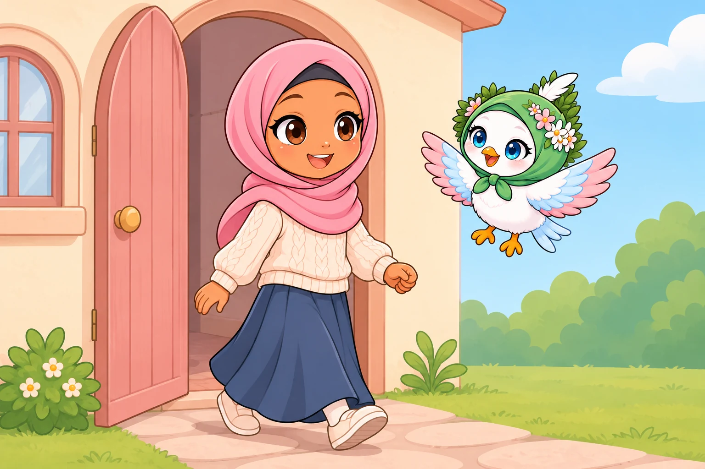
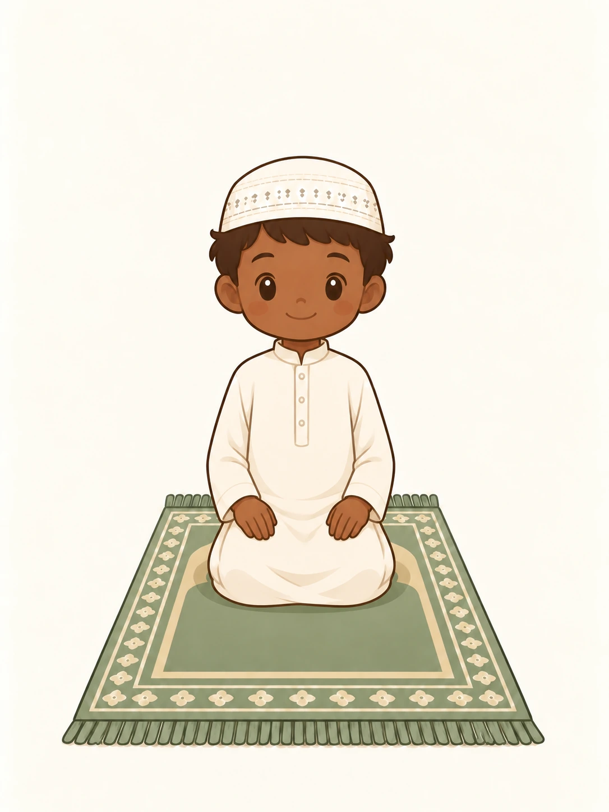
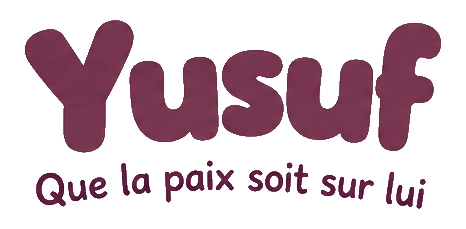
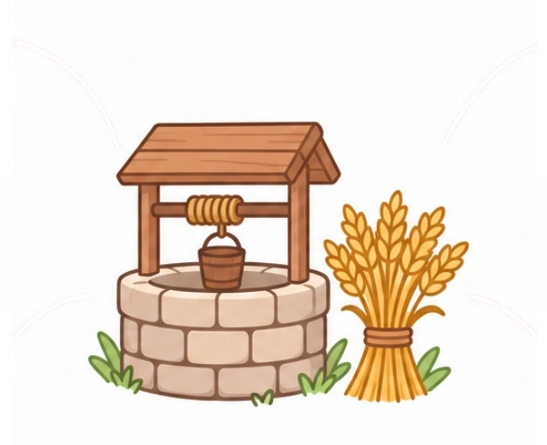

Invocation de la semaine
En sortant de la maison
Mon entraînement
0 jour sur 7Je découvre les mots.
À ton rythme. Tes étoiles restent, même si tu fais une pause.
Comment je la récite
Lire et écouter
بِسْمِ اللَّهِ تَوَكَّلْتُ عَلَى اللَّهِ لَا حَوْلَ وَلَا قُوَّةَ إِلَّا بِاللَّهِ
Bismi-llâh, tawakkaltu ‘ala-llâh, lâ hawla wa lâ quwwata illâ bi-llâh.
Au nom d’Allah, je place ma confiance en Allah. Il n’y a de force ni de puissance qu’en Allah.
Source : Sunan Abi Dawud · 5095
Reprendre

✦ Nouveau · Kawaii Salat
La prière s’apprend,
un geste à la fois.
Des positions en images, une voix douce et les paroles pour apprendre à son rythme.
Découvrir Kawaii SalatToute l’application est gratuite, sans abonnement.
Assis, je prie sur le Prophète ﷺ
Après le tachahhoud, toujours assis, j’apprends ces paroles.
اللَّهُمَّ صَلِّ عَلَى مُحَمَّدٍ وَعَلَى آلِ مُحَمَّدٍ، كَمَا صَلَّيْتَ عَلَى إِبْرَاهِيمَ وَعَلَى آلِ إِبْرَاهِيمَ، إِنَّكَ حَمِيدٌ مَجِيدٌ. اللَّهُمَّ بَارِكْ عَلَى مُحَمَّدٍ وَعَلَى آلِ مُحَمَّدٍ، كَمَا بَارَكْتَ عَلَى إِبْرَاهِيمَ وَعَلَى آلِ إِبْرَاهِيمَ، إِنَّكَ حَمِيدٌ مَجِيدٌ.
Phonétique et traduction
Pour m’aider à prononcer
Allâhoumma salli ‘alâ Mouhammadin wa ‘alâ âli Mouhammad, kamâ sallayta ‘alâ Ibrâhîma wa ‘alâ âli Ibrâhîm, innaka hamîdoun majîd. Allâhoumma bârik ‘alâ Mouhammadin wa ‘alâ âli Mouhammad, kamâ bârakta ‘alâ Ibrâhîma wa ‘alâ âli Ibrâhîm, innaka hamîdoun majîd.
Le sens en français
Ô Allah, accorde Ta prière à Muhammad et à la famille de Muhammad, comme Tu as accordé Ta prière à Ibrahim et à la famille d’Ibrahim. Tu es digne de louange et de gloire. Ô Allah, bénis Muhammad et la famille de Muhammad, comme Tu as béni Ibrahim et la famille d’Ibrahim. Tu es digne de louange et de gloire.
Source : Sahîh Al-Bukhârî · 3370 ↗
Le prophète de la semaine
Une découverte gratuite en famille


Yusuf
Je pardonne et je fais le bien.
Découvrir son histoire Voir les 25 prophètesUn nouveau prophète chaque lundi.
Mes prières
HORAIRES DE PRIÈRE